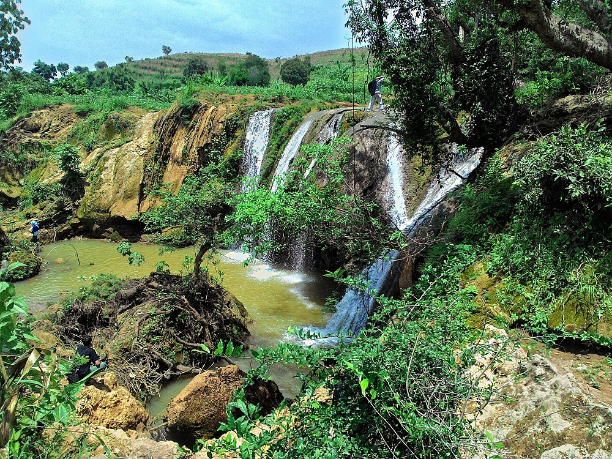
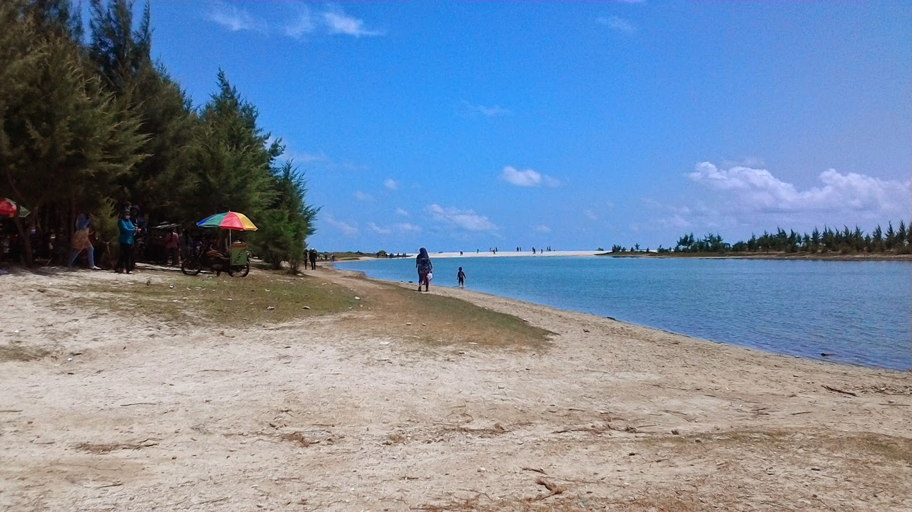
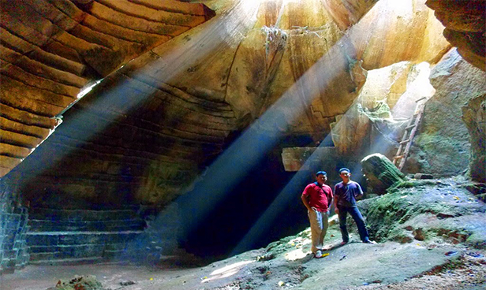
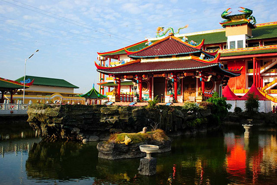

POPULER
Temukan Wisata Populer Di Tuban

Goa Akbar
Goa Akbar, kebanggaan masyarakat Tuban. Goa yang penuh eksotis yang menyajikan daya tarik yang luar biasa

Gajahan Waterfall
Berkunjung ke kota Tuban belum komplit rasanya kalau belum mampir di Air Terjun Gajahan

Watu Ondo
Dari namanya yaitu Watu yang berarti batu, dan Ondo dalam bahasa indonesianya berarti tangga

Remen Beach
pemandangan pantai yang menakjubkan dengan pantai yang berwarna putih cerah dengan belahan danau yang unik

Goa Suci
Goa yang berstruktur batuan kapur ini bukan goa alam. Goa ini diyakini buatan manusia pada masa kejayaan kerajaan Majapahit.

Kwan Sing Bio
Klenteng ini merupakan salah satu Klenteng yang cukup ramai dikunjungi di wilayah Jawa Timur